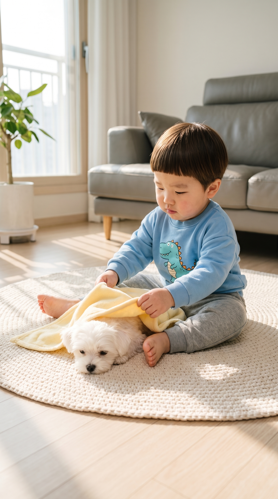
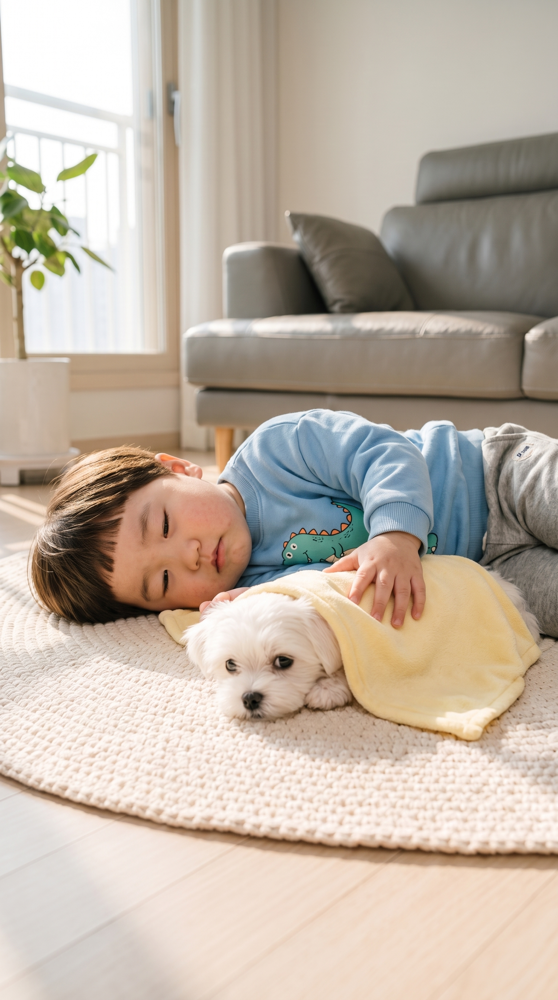

도윤이와 콩이: 콩이 낮잠 재우다 먼저 잠든 도윤이
이야기 — 햇살 드는 오후, 엄마처럼 콩이를 토닥토닥 낮잠 재우겠다고 나선 도윤이. 자장가를 부르다 정작 자기가 먼저 곯아떨어지고, 콩이만 말똥말똥.
- 컷마다 사진을 길게 눌러 사진 앱에 저장
- Flow 앱 → 그 사진을 시작 프레임으로 넣기
- 아래 프롬프트 복사 → 붙여넣기, 길이는 컷에 적힌 초 (Flow 가능 길이 4·6·8·10초)
1
상황 · 8초
이불 위에 앉아 노란 담요를 콩이에게 덮어 주고 등을 토닥토닥하며 의젓하게

📲 사진을 길게 눌러 «사진 앱에 저장» · 또는 원본 열기
{kind=link}
🗣 «콩이야, 이제 코 자야 돼. 도윤이가 재워 줄게.»
Flow 프롬프트 · 길이 8초
Prompt: 9:16 vertical video in Korea. Maintain exact appearance from start frame: cute 24-month-old Korean toddler boy Doyoon in a sky-blue dinosaur-print sweatshirt and grey jogger pants and his small fluffy white Maltese puppy friend Kongi on a round cream knitted rug in a bright sunny Korean apartment living room in the afternoon. Static camera, eye-level medium shot. Doyoon pulls the small yellow puppy blanket over Kongi and pats the blanket gently with a serious, proud big-brother look. Dialogue: "콩이야, 이제 코 자야 돼. 도윤이가 재워 줄게." Audio: Solo 24-month-old Korean toddler boy voice speaking clear Korean, quiet indoor room tone.
2
전개 · 6초
콩이 옆에 옆으로 누워 담요를 천천히 토닥이며 눈꺼풀이 스르르 무거워지며

📲 사진을 길게 눌러 «사진 앱에 저장» · 또는 원본 열기
{kind=link}
🗣 «자장자장, 콩이 눈 감아.»
Flow 프롬프트 · 길이 6초
Prompt: 9:16 vertical video continuing from previous scene in Korea. Maintain exact appearance from start frame: cute 24-month-old Korean toddler boy Doyoon in a sky-blue dinosaur-print sweatshirt and grey jogger pants and his small fluffy white Maltese puppy friend Kongi on a round cream knitted rug in a bright sunny Korean apartment living room in the afternoon. Static camera, eye-level medium shot. Doyoon lies on his side next to Kongi on the rug, slowly pats the yellow blanket, and his eyelids droop for an afternoon nap, while Kongi stays wide awake and looks around. Dialogue: "자장자장, 콩이 눈 감아." Audio: Solo 24-month-old Korean toddler boy voice speaking softly and sleepily in clear Korean, quiet indoor room tone.
3
반전 · 10초
소파에 기대 앉아 고개를 꾸벅꾸벅 졸며 웅얼거리고, 옆에서 말똥말똥한 콩이가 고개를 갸웃하며

📲 사진을 길게 눌러 «사진 앱에 저장» · 또는 원본 열기
{kind=link}
🗣 «음냐, 콩이 착하다. 도윤이도 코 잘게.»
Flow 프롬프트 · 길이 10초
Prompt: 9:16 vertical video continuing from previous scene in Korea. Maintain exact appearance from start frame: cute 24-month-old Korean toddler boy Doyoon in a sky-blue dinosaur-print sweatshirt and grey jogger pants and his small fluffy white Maltese puppy friend Kongi on a round cream knitted rug in a bright sunny Korean apartment living room in the afternoon. Static camera, eye-level medium shot. Doyoon sits on the rug leaning against the grey sofa and dozes off, his head nodding slowly, and mumbles sleepily, while Kongi sits beside him wide awake and tilts its head curiously. Dialogue: "음냐, 콩이 착하다. 도윤이도 코 잘게." Audio: Solo 24-month-old Korean toddler boy voice mumbling softly in clear Korean, quiet indoor room tone.
🧪 검증 실험 — 대사만 바꿨다
실패는 크레딧이 안 드니 5개 모두 돌려 주세요. 각각 통과 / 실패만 알려 주시면 됩니다.
실험끼리 대사만 다르고 나머지 글자는 실패했던 1·3컷과 똑같습니다 — 그래서 통과하면 그 대사가 원인으로 확정됩니다.
실험끼리 대사만 다르고 나머지 글자는 실패했던 1·3컷과 똑같습니다 — 그래서 통과하면 그 대사가 원인으로 확정됩니다.
1A
«코 자야 돼 · 재워 줄게» 둘 다 뺌
시작 사진: 1컷 사진 · 대사 외 글자는 실패했던 원본과 같음
🗣 «콩이야, 쉿! 형아가 토닥토닥 해 줄게.»
실험 1A
Prompt: 9:16 vertical video in Korea. Maintain exact appearance from start frame: cute 24-month-old Korean toddler boy Doyoon in a sky-blue dinosaur-print sweatshirt and grey jogger pants and his small fluffy white Maltese puppy friend Kongi on a round cream knitted rug in a bright sunny Korean apartment living room in the afternoon. Static camera, eye-level medium shot. Doyoon pulls the small yellow puppy blanket over Kongi and pats the blanket gently with a serious, proud big-brother look. Dialogue: "콩이야, 쉿! 형아가 토닥토닥 해 줄게." Audio: Solo 24-month-old Korean toddler boy voice speaking clear Korean, quiet indoor room tone.
1B
«재워 줄게»만 뺌
시작 사진: 1컷 사진 · 대사 외 글자는 실패했던 원본과 같음
🗣 «콩이야, 이제 코 자야 돼.»
실험 1B
Prompt: 9:16 vertical video in Korea. Maintain exact appearance from start frame: cute 24-month-old Korean toddler boy Doyoon in a sky-blue dinosaur-print sweatshirt and grey jogger pants and his small fluffy white Maltese puppy friend Kongi on a round cream knitted rug in a bright sunny Korean apartment living room in the afternoon. Static camera, eye-level medium shot. Doyoon pulls the small yellow puppy blanket over Kongi and pats the blanket gently with a serious, proud big-brother look. Dialogue: "콩이야, 이제 코 자야 돼." Audio: Solo 24-month-old Korean toddler boy voice speaking clear Korean, quiet indoor room tone.
1C
«코 자야 돼»만 뺌
시작 사진: 1컷 사진 · 대사 외 글자는 실패했던 원본과 같음
🗣 «도윤이가 재워 줄게.»
실험 1C
Prompt: 9:16 vertical video in Korea. Maintain exact appearance from start frame: cute 24-month-old Korean toddler boy Doyoon in a sky-blue dinosaur-print sweatshirt and grey jogger pants and his small fluffy white Maltese puppy friend Kongi on a round cream knitted rug in a bright sunny Korean apartment living room in the afternoon. Static camera, eye-level medium shot. Doyoon pulls the small yellow puppy blanket over Kongi and pats the blanket gently with a serious, proud big-brother look. Dialogue: "도윤이가 재워 줄게." Audio: Solo 24-month-old Korean toddler boy voice speaking clear Korean, quiet indoor room tone.
3A
«코 잘게» → «쪼끔만 쉴게»
시작 사진: 3컷 사진 · 대사 외 글자는 실패했던 원본과 같음
🗣 «음냐, 콩이 착하다. 형아도 쪼끔만 쉴게.»
실험 3A
Prompt: 9:16 vertical video continuing from previous scene in Korea. Maintain exact appearance from start frame: cute 24-month-old Korean toddler boy Doyoon in a sky-blue dinosaur-print sweatshirt and grey jogger pants and his small fluffy white Maltese puppy friend Kongi on a round cream knitted rug in a bright sunny Korean apartment living room in the afternoon. Static camera, eye-level medium shot. Doyoon sits on the rug leaning against the grey sofa and dozes off, his head nodding slowly, and mumbles sleepily, while Kongi sits beside him wide awake and tilts its head curiously. Dialogue: "음냐, 콩이 착하다. 형아도 쪼끔만 쉴게." Audio: Solo 24-month-old Korean toddler boy voice mumbling softly in clear Korean, quiet indoor room tone.
3B
«도윤이도 코 잘게»만 뺌
시작 사진: 3컷 사진 · 대사 외 글자는 실패했던 원본과 같음
🗣 «음냐, 콩이 착하다.»
실험 3B
Prompt: 9:16 vertical video continuing from previous scene in Korea. Maintain exact appearance from start frame: cute 24-month-old Korean toddler boy Doyoon in a sky-blue dinosaur-print sweatshirt and grey jogger pants and his small fluffy white Maltese puppy friend Kongi on a round cream knitted rug in a bright sunny Korean apartment living room in the afternoon. Static camera, eye-level medium shot. Doyoon sits on the rug leaning against the grey sofa and dozes off, his head nodding slowly, and mumbles sleepily, while Kongi sits beside him wide awake and tilts its head curiously. Dialogue: "음냐, 콩이 착하다." Audio: Solo 24-month-old Korean toddler boy voice mumbling softly in clear Korean, quiet indoor room tone.